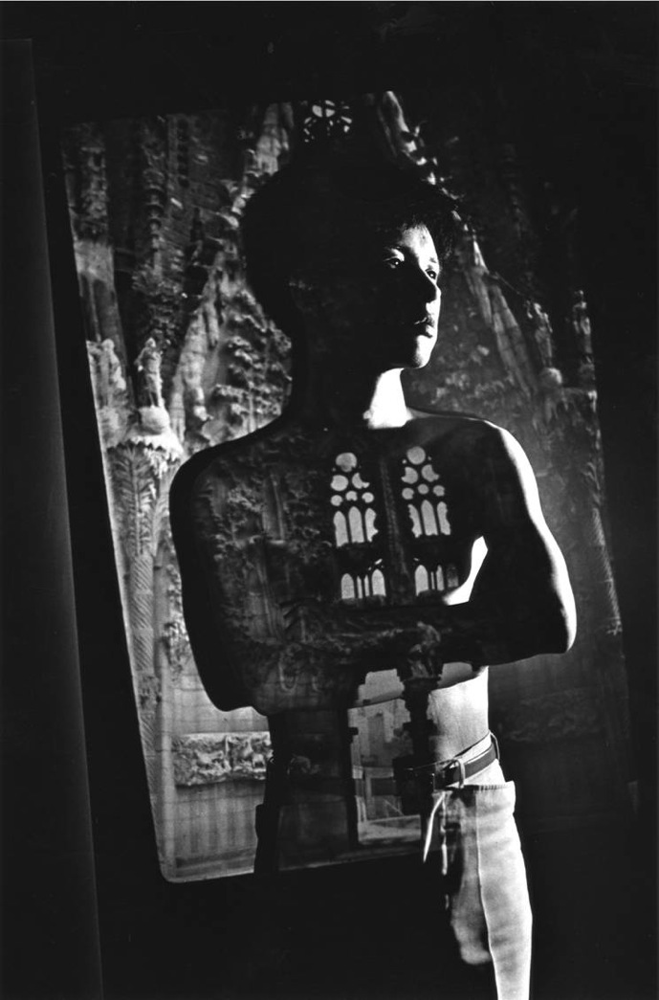

Na wystawie przygotowanej przez Instytucję Kultury Ars Cameralis zaprezentowana zostanie twórczość i sylwetka artysty, który ów trend zainicjował.
Instytucja Kultury Ars Cameralis
Ars Cameralis Silesiae Superioris
Górnośląski Festiwal Sztuki Kameralnej



Wystawa w CSW Kronika i Muzeum Śląskim
“Simon Yotsuya i przyjaciele, czyli Bellmer w Japonii”

1 - 31 października 2010 roku
ZAPRASZAMY WSZYSTKICH CZŁONKÓW I SYMPATYKÓW TOWARZYSTWA BELLMER NA SPECJALNE WYDARZENIE:
Wystawa Simona Yotsuyi na Śląsku ma w jego karierze charakter wyjątkowy i symboliczny. Artysta traktuje ją jako swego rodzaju pielgrzymkę do miasta Mistrza – Sensei. W Muzeum Śląskim i CSW Kronika w Bytomiu można będzie zobaczyć: oryginalne lalki Simona i jego uczniów, materiały ilustrujące drogę artysty do lalki Hansa Bellmera, a także znakomite fotografie autorstwa legendarnych Eikoh Hosoe i Kishina Shinoyamy.
==============

Na Śląsku od lat dużo się mówi o Hansie Bellmerze, a wciąż nie wiadomo zbyt wiele o twórczym poruszeniu, które wywołał ów artysta w Japonii. To właśnie tam, w kraju zwanym czasem – ze względu na swoją wielowiekową lalkarską tradycję – krainą lalek (land of the dolls), bellmerowska estetyka zainspirowała kilka pokoleń artystów.
21-letni wówczas Simon Yotsuya spotkał się z twórczością Bellmera w 1965 roku za pośrednictwem Tatsuhiko Shibusawy, zafascynowanego surrealizmem tłumacza literatury francuskiej. Prace „budowniczego lalki” towarzyszą Simonowi do dziś. Artysta jest przy tym postacią niezwykle barwną i charyzmatyczną – jako członek grupy awangardowego Jokyo Gekijo (Situation Theater) zgromadził wokół siebie najświetniejsze postacie japońskiej kultury tamtych czasów, np. malarza-designera Kuniyoshi Kaneko, fotografów Eikoh Hosoe i Kishina Shinoyamę. Najważniejszym dokonaniem Hosoe pozostaje – obok Barakei, portretów Yukio Mishimy i cyklu Kamaitachi – cykl portretów pt. Simon.
Niezwykłość dzieła Yotsuyi polega na niepowtarzalnej atmosferze, która wypływa z ręcznie kreowanych lalek, stając się inspiracją dla innych artystów, pisarzy, jak również przedmiotem pożądania kolekcjonerów z całego świata. Jeżeli nawet uznamy, że mamy do czynienia z lalkami tylko jako pewnego rodzaju przedmiotami, to i tak nie wyzwolimy ich z piętna seksualności, dojrzałości czy perwersyjności.
Simon Yotsuya jest wciąż aktywny artystycznie, a ponadto prowadzi słynną Ecole de Simon, szkołę, w której młodzi tokijscy artyści – coraz mocniej uwikłani we wszechobecną w Japonii kulturę masową – spotykają się, by kontynuować tradycję zapoczątkowaną przez Simona.
Hans Bellmer urodził się w Katowicach w 1902 roku. Osoby surowego ojca oraz łagodnej matki miały utrwalić w świadomości młodego Hansa podział świata na sferę męską i kobiecą. Katowice pozostały dla Bellmera, jednego z najważniejszych artystów surrealizmu, ważnym składnikiem biografii kulturowej i osobistej.
Eikoh Hosoe (ur. 1933) – artysta fotografik, uznany i ceniony na całym świecie, w opinii krytyków artysta o trwałym miejscu w historii fotografii japońskiej. Swą wyjątkową pozycję zaznaczył już w latach 60. ubiegłego wieku, tworząc cykle Barakei oraz Kamaitachi. Pierwszy powstał w 1963 roku, we współpracy z Yukio Mishimą. Drugi – z 1969 roku – zrealizował wspólnie z Tatsumi Hijikatą, twórcą butoh. Artyści stworzyli improwizowany dokument wspólnie z mieszkańcami wioski na północy Japonii. Cykl inspirowany był legendą kamaitachi, czyli legendą o demonie o wyglądzie łasicy, niszczącym pola ryżowe.
W 1971 roku Eikoh Hosoe podjął współpracę z Simonem Yotsuyą, czego efektem był cykl fotograficzny The Prelude of Yotsuya Simon. Projekt nawiązuje do Kamaitachi, gdyż tematem jest ciało, jednak tłem jest Tokio oraz jego mieszkańcy. Równocześnie ciało inaczej potraktowano niż w Kamaitachi, gdyż celem artysty było zburzenie starego i jednostajnego rytmu starego miasta. Z drugiej strony, ciało Simona, bohatera fotografii, jest niezwykle delikatne, plastyczne, wpisane w pejzaż miasta.
Eikoh Hosoe: Tatsuhiko Shibusawa, Writer (1965)
Kishin Shinoyama (ur. 1930) – japoński fotograf, w którego twórczości – od ponad 40 lat – fundamentalne są zagadnienia przemiany czasu. Z drugiej strony czerpie energię z obserwacji rytmu życia stolicy Japonii, Tokio. Pod koniec lat 60. ubiegłego wieku tworzy czarno-białe cykle zdjęć: The Birth, Twin oraz Death Valley, dzięki którym zaliczony zostaje do najważniejszych artystów w kraju Kwitnącej Wiśni. W latach 80. tworzy cykl skandalizujących aktów wpisanych w urbanistyczny pejzaż Tokio. Równolegle podejmuje pracę nad projektem, umownie zwanym Shinorama, mającym być panoramiczną odbitką przestrzeni stolicy Japonii oraz życia jej mieszkańców. W 1985 roku, w wyniku współpracy z Simonem Yotsuyą, powstaje album zatytułowany Pygmalionisme. Shinoyama jest autorem licznych zdjęć, które stały się ikonami światowej kultury, m.in. uwiecznił pocałunek Johna Lennona z Yoko Ono (fotografię zamieszczono w albumie Double Fantasy), a jego książka Water Fruits to najlepiej sprzedający się album fotograficzny w Japonii.
Kishin Shinoyama: Mechanical Girl 1 (1983)
Honorowy patronat
Ambasada Japonii w Polsce
Marszałek Województwa Śląskiego
Organizator
Współorganizatorzy
CSW Kronika w Bytomiu
Ecole de Simon w Tokio
Kamada Soy Sauce Inc.
Muzeum Sztuki w Oita
Muzeum Sztuki Współczesnej w Sapporo
Muzeum Śląskie w Katowicach
Kuratorzy
Sławomir Rumiak / Takio Sugawara
Projekt dofinansowany ze środków
Miasta Bytomia
Miasta Katowic
Patronat medialny
„Gazeta Wyborcza”
Polskie Radio Katowice
„arteon”
„Ultramaryna”
Instytucja Kultury
ul. Ligonia 7 40-036 Katowice
tel.: 32 257 06 01
tel/fax: 32 251 86 48
polecamy WYDARZENIE !!!
Wernisaż 1 października
godz. 17.00 / Muzeum Śląskie w Katowicach
/ al. Wojciecha Korfantego 3;
godz. 19.00 / CSW Kronika w Bytomiu
/ Rynek 26
Podczas wernisażu w CSW Kronika spotkanie z Simonem Yotsuyą i kuratorami